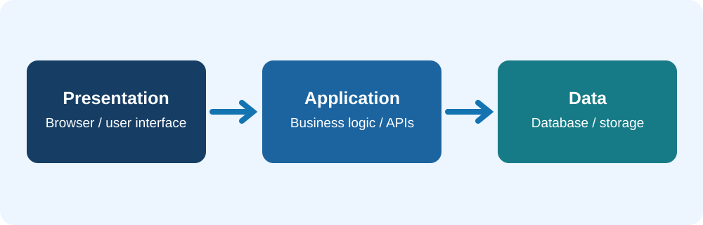

Two-Tier Architecture
A client communicates directly with a server or database service. The client usually provides the user interface and can perform some processing.
Example: A desktop application connected directly to a database server.
IT 3203 / RESEARCH PROJECT
How two-tier, three-tier, and peer-to-peer approaches organize computing responsibilities.
Common system designs
Client-server solutions can be simple or involve several layers. Separating responsibilities can help improve maintenance, security, and scalability.
A client communicates directly with a server or database service. The client usually provides the user interface and can perform some processing.
Example: A desktop application connected directly to a database server.
Presentation, application, and data layers perform separate responsibilities. The browser displays information, the application processes logic, and the data layer stores information.
Example: An online store with a frontend, application services, and a database.

In client-server architecture, a server provides centralized services. In a peer-to-peer system, participating computers may both request and provide resources.
| Feature | Client-Server | Peer-to-Peer |
|---|---|---|
| Resource sharing | Provided by dedicated server systems | Distributed among peers |
| Management | More centralized | More distributed |
| Typical strength | Centralized control and policy management | Less dependence on one central server |